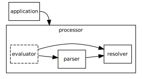

Introduction
This section is non-normative.
Datalog is a logic programming language and a subset of the earlier Prolog1. The language is interesting as it can be used as a data query language akin to SQL with some important additional capabilities such as recursive queries. It is also expressive enough to allow for it’s use as an entailment mechanism for ontology languages such as the Web Ontology Language (OWL)2 and the Semantic Web.
The specific language that may be represented by the DATALOG-TEXT grammar includes typed attributes and functional dependencies for relations, negated and arithmetic literals, disjunction in rule heads, and constraint rules. With the exception of required support for typed attributes the other language features are opt-in using pragmas.
How to Read This Document
This section is non-normative.
This document is a detailed specification for DATALOG-TEXT, a representation in textual form, of a Datalog program. The document is primarily intended for the following audiences:
- Software developers who want to generate or consume Datalog programs, in the DATALOG-TEXT representation.
- Software developers who want to convert existing Datalog serializations to DATALOG-TEXT.
- Software developers who want to implement processors and APIs for DATALOG-TEXT.
- Software developers who want to understand the design decisions and language syntax for DATALOG-TEXT.
Contributing
This section is non-normative.
The content for this site is generated from a GitHub repository. Discussions, comments, and errata are hosted on the specification GitHub repository’s discussion section.
Terminology
This section is non-normative.
- Media Type – This specification describes an Internet Media Type RFC1590 that is used “in order to provide open and extensible data typing and type negotiation” – from RFC2616, section 3.7.
- Program – A complete Datalog entity that may be serialized into a resource in a particular representation or media type.
- Representation – “An entity included with a response that is subject to content negotiation, as described in section [removed]. There may exist multiple representations associated with a particular response status.” – from RFC2616, section 1.3.
- Resource – “A network data object or service that can be identified by a URI, as defined in section [removed]. Resources may be available in multiple representations (e.g. multiple languages, data formats, size, and resolutions) or vary in other ways.” – from RFC2616, section 1.3.
- Dataset – An external resource that holds a representation of a Datalog resource.
Using these terms this specification describes a particular representation of a Datalog program, whose type is identified by a unique media type, that may be serialized into a resource for storage or transfer.

- Application – This denotes some software component that requires the ability to download, read, and act upon Datalog resources. To accomplish this the application has to interact with the processor.
- Processor – A software component that provides at lease the parser and resolver and commonly the evaluator as well.
- Parser – The subcomponent that actually parses the resource, validating syntax and well-formedness rules (see § Grammar for the details of the DATALOG-TEXT language grammar).
- Resolver – The subcomponent that has to resolve and make available any referenced dataset resources (see § Resolvers for details of the resolver).
- Evaluator – The subcomponent that consumes the parsed program and entails intensional facts from rules.
Using these terms this specification describes the requirements of the parser to correctly produce some representation of the program provided to it, and also the resolver requirements for retrieving external resources.
Datalog Naming Convention
When we talk specifically about the Datalog language it is common to represent it in a roman serif face as $\small\text{Datalog}$. This allows the distinction of talking in general about Datalog in the abstract vs. the actual semantics of the language $\small\text{Datalog}$.
This core $\small\text{Datalog}$ language has many documented extensions that provide additional flexibility, conciseness, or expressiveness. These languages, sub-languages, extensions, or dialects are usually labeled by adding a superscript symbol that identifies the specific extension. For example, $\small\text{Datalog}^{\lnot}$ is the language extended with negation of literals, $\small\text{Datalog}^{\Gamma}$ is the language extended with type checking on attributes, and $\small\text{Datalog}^{\lnot,\theta}$ is the language extended with negation of literals and arithmetic literals. The order of superscript symbols is irrelevant.
| Language | Introduces | Symbols |
|---|---|---|
| $\small\text{Datalog}^{\lnot}$ | negation of literals in rule bodies | !, NOT, ￢ |
| $\small\text{Datalog}^{\lor}$ | disjunction in rule heads | ;, OR, ∨ |
| $\small\text{Datalog}^{\Leftarrow}$ | rules as constraints, i.e. no body | N/A |
| $\small\text{Datalog}^{\Gamma}$ | typed attributes for relations | N/A |
| $\small\text{Datalog}^{\theta}$ | arithmetic literals in rule bodies | =, !=, ≠, <, <=, ≤, >, >=, ≥, *=, ≛` |
| $\small\text{Datalog}^{\rightarrow}$ | functional dependency processing instruction | -->, ⟶ |
When referring to the specifics of the language we will use the common format $\small\text{Datalog}$ with superscripts as necessary to identify specific language extensions being used. Note that the default language described by DATALOG-TEXT with no enabled language features is in fact $\small\text{Datalog}^{\Gamma}$ and not $\small\text{Datalog}$.
Chapter 1 of CeGoTa90 provides a good overview of the drawbacks of Prolog and the advantages of Datalog for certain tasks.